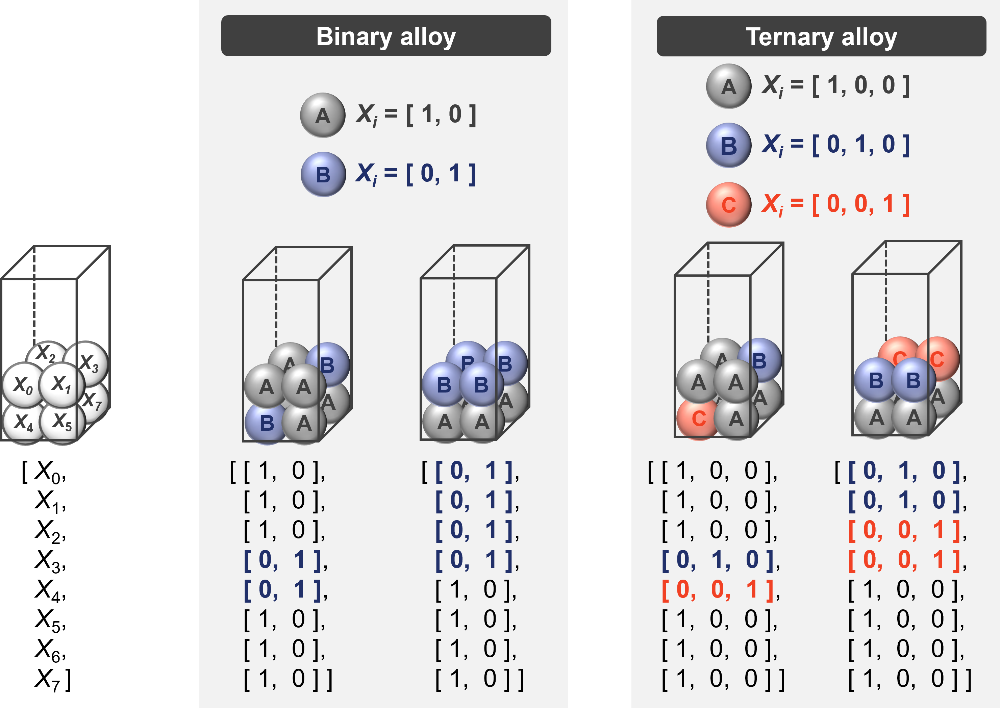
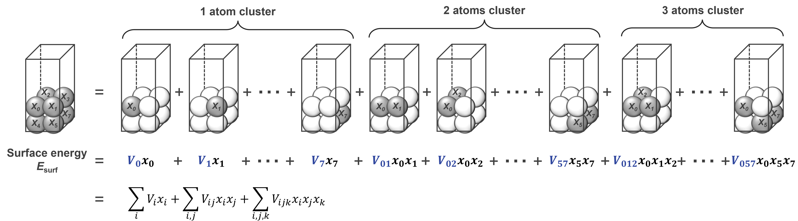
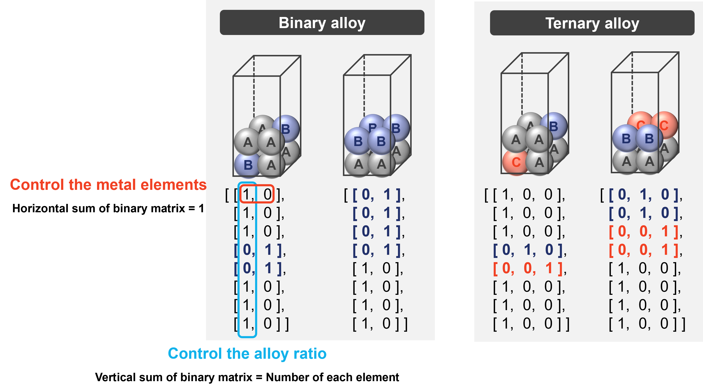

4. Surface Modeling with Quantum Annealing
4.1. Applying Quantum Annealing to Surface Modeling
To solve surface modeling problems using an annealing machine, applying surface modeling to combinatorial optimization problems
To actually perform surface modeling using an annealing machine, two things are necessary: 1) representing the combinations of metal arrangements using binary values (0 or 1) and 2)functionalizing the stability of the surface model for each combination of metal arrangements.
1) Binarization of combination on metal arrangement
For a binary alloy composed of two types of metals, A and B, the combination of metal arrangements can be binarized by assigning [1,0] if metal A occupies a certain atomic position, and [0,1] if metal B occupies it
2) Functionalizing the stability of the surface model
The stability of a surface model can be evaluated by its surface energy; therefore, if the surface energy for each combination of metal configurations can be made into a function, it can be solved using an annealing machine.
4.2. Formulation using the Cluster Expansion Method
The cluster expansion method is a method for expressing the energy of a system as the sum of the energies of small clusters. In this example, we will describe the surface energy of an alloy surface as the sum of clusters consisting of several atoms.
Here, V represents the effect of each cluster on the surface energy of the entire alloy surface, which is called the cluster interaction. To obtain this cluster interaction, the surface energies of several alloy surface models are calculated by DFT calculations, and the cluster interaction can be calculated by regression using the CLEASE package in python.
4.3. Executing Annealing
Using the cluster interactions obtained by the cluster expansion method, we create a QUBO formula (quadratic unconstrained binary optimization formula) that can be solved by an annealing machine. Then, annealing can be performed by loading this QUBO formula. When performing annealing, the combination that minimizes the objective function is searched for, so the metal element and alloy ratio must be controlled and a constraint function is set for this. Here, by applying constraints using one-hot encoding, it is possible to model an alloy surface with the desired metal element and alloy ratio.
4.4. Ouput the result and Understanding
SurfQit can output X-ray diffraction patterns, radial distribution functions, and adsorption models for evaluating catalytic performance for surface models obtained by performing annealing.